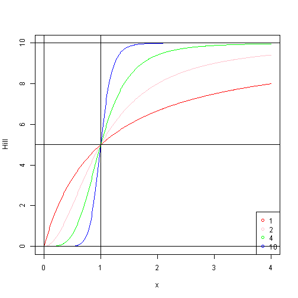

Enzyme Kinetics
- Michaelis-Menten equation
- Michaelis-Menten equation
Cooperativity
In biochemistry, the binding of a ligand to a macromolecule is often enhanced if there are already other ligands present on the same macromolecule (this is known as cooperative binding). The Hill coefficient provides a way to quantify this effect.- potassium channel
- hemoglobin
- potassium channel
Hill Coefficient
Hill coefficient, describing cooperativity (or possibly other biochemical properties, depending on the context in which the Hill equation is being used)
Hill Function
Data Product Project
JediZ
Coursera
Introduction
Hill Function
Definition:
where S is substrate concentration,
h is hill number,
Km and Vm has same meaning as in Michaelis-Menten Equation.
R code:
hill <- function(x, Km, Vm, h=1) {
xh <- x^h
Kmh <- Km^h
Vm*xh / (Kmh+xh)
}
Hill Function in Action
h = 1,2,4,10;
Km = 1; Vm = 10;
